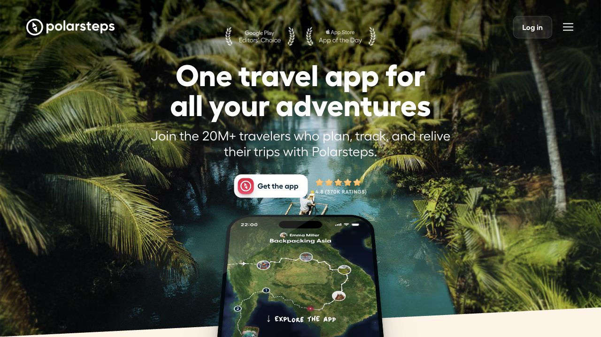
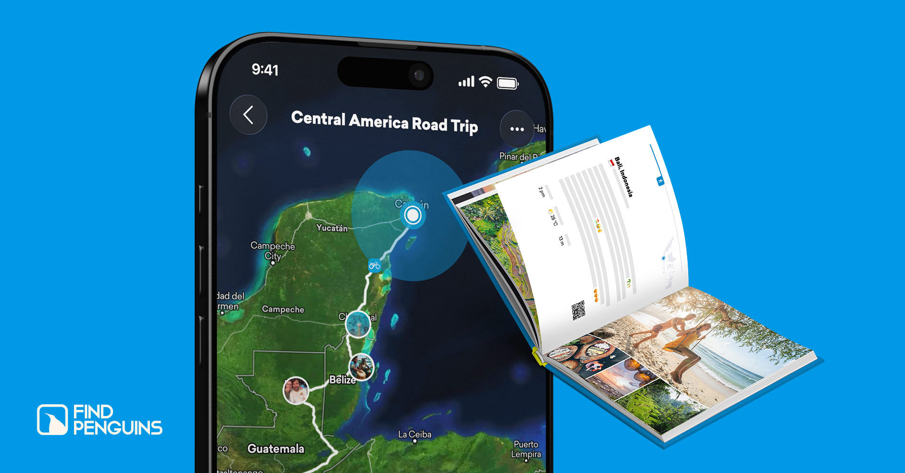
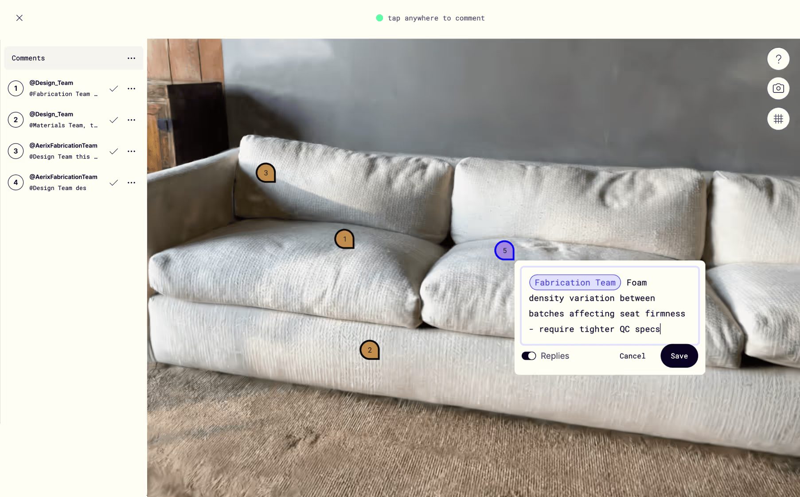

Executive summary
1. The competitive set is not a straight line
These four products do not all look like Travel Memory Museum. They matter because each one owns a critical part of the user's current workflow, making them more useful for product decisions than a narrow list of direct lookalikes.
Polarsteps
User job: automatically track a route, add photos and stories, share a trip, and turn it into a physical travel book.
Competitive pressure: the established default for travel memory capture and sharing.
FindPenguins
User job: track travel offline, publish a travel journal, discover other trips, and create travel books or 3D route flyover videos.
Competitive pressure: free, low-friction travel logging with community content.
Polycam
User job: capture reality with photogrammetry, LiDAR, or AI, then generate and share 3D models.
Competitive pressure: 3D capture quality, professional depth, export options, and cross-platform reach.
Milanote
User job: arrange images, text, video, and files on a free-form board, then share it through a read-only link that requires no account.
Competitive pressure: mature expectations for moodboard freedom, templates, and collaboration.
| Product | Public adoption signal | Primary business model | Comparability note |
|---|---|---|---|
| Polarsteps | 20M+ travelers | Free app + physical products such as Travel Books | A user signal, not market share |
| FindPenguins | Millions of travelers; 10M+ travel experiences | Free app + Premium + Photo Books | User and content counts use different units |
| Polycam | No comparable user figure disclosed on the official pages reviewed | Limited free use + subscription plans | A professional 3D category with a different user job |
| Milanote | No comparable user figure disclosed on the official pages reviewed | 100 free notes/images/links + unlimited Professional plan | A creative tool with a different usage pattern |
No consistent, auditable market-share dataset was found, so this report deliberately avoids a market-share pie chart. Combining registered users, downloads, and content counts would create a misleading comparison.
Product evidence
Official interfaces, not imagined feature lists
These public visuals show how the closest substitutes frame their value in the product itself. They are evidence of positioning and interaction patterns—not evidence of user satisfaction or comparative quality.

The route map, photo moments, and “plan, track, relive” framing make effortless capture and later replay the product's visible promise.
Official public homepage · accessed June 20, 2026
Mapped photo moments and the Photo Book output show a complete memory loop: capture, publish, revisit, and turn the trip into a keepsake.
Official public product visual · accessed June 20, 2026
The object result, annotations, and sharing controls reveal the quality bar users may already expect once a physical souvenir becomes an interactive 3D asset.
Official Object Capture page · accessed June 20, 20262. The whitespace is in the end-to-end combination
| Critical capability | Travel Museum | Polarsteps | FindPenguins | Polycam | Milanote |
|---|---|---|---|---|---|
| Travel context and place-based stories | Core | Strong | Strong | Weak | Generic |
| Purpose-built souvenir records | Core | None | None | Any object can be scanned | Images can be uploaded |
| Multi-image object-to-3D | Core | None | 3D route video only | Strong | None |
| Emotion and personal meaning | Native | Stories | Stories | None | Free text |
| Collection browsing, search, and filters | Native | Trip-based | Trip-based | 3D captures | Boards |
| Free-form curation canvas | MVP | None | None | None | Strong |
| Public link with no login | MVP | Trip sharing | Trip sharing | Model sharing | Read-only links |
| Souvenir → digital exhibition workflow | The product's spine | None | None | Stops at the model | Requires manual assembly |
Scores from 0–100 are analytical judgments based on publicly described feature coverage. They are not measures of objective quality, satisfaction, or market share. Travel Museum represents the PRD target state, not a shipped product.
3. Positioning: connect two separate worlds
Travel products sit in the high-context, low-object-immersion corner. 3D scanners sit in the high-object-immersion, low-travel-context corner. Travel Memory Museum becomes distinctive by connecting both ends in one journey.
Both axes are analytical scores. Bubble size represents workflow breadth, not market size.
4. What to learn from each competitor
Learn automation and replay
Worth borrowing: automatic tracking, offline operation, low battery use, travel statistics, shareable video, and physical books. It hides the burden of capture while making the value of looking back highly visible.
Space it leaves open: content is organized around trips and routes—not physical keepsakes, 3D objects, or curated exhibitions. Our home screen should feel like “your object museum,” not a route planner.
Learn free sharing and content loops
Worth borrowing: offline tracking, photo stories, friend sharing, travel books, and lightweight delight through 3D route flyover videos. Public stories also create a discovery and inspiration loop.
Space it leaves open: its 3D is an expression of the route, not a digitization of physical souvenirs. Travel Museum can use public moodboards as a sharing loop without copying a travel community in the MVP.
Learn confidence and result quality
Worth borrowing: object, space, and photogrammetry capture; directly shareable models; a limited free tier; and paid value created through higher image limits and unlimited capture.
Space it leaves open: its public positioning is professional reality capture. Travel Museum should hide file formats and technical language, translating guidance into: “help your souvenir look like itself.”
Learn controlled freedom
Worth borrowing: flexible layout, rich content types, templates, private-by-default boards, granular permissions, and no-sign-up read-only links. It sets a mature expectation for digital moodboards.
Space it leaves open: a generic tool asks users to find assets and create meaning themselves. Travel Museum already has the object, place, story, emotion, and 3D model—so fewer tools can produce a more meaningful result.
5. Five forces: real opportunity, powerful substitutes
6. Blue Ocean actions: do less to become more distinct
- Automatic route tracking and trip planning
- Professional 3D export formats and measurement terminology
- A public content feed and follower graph
- Infinite-canvas complexity and advanced design controls
- Field count and first-record effort
- Technical details users must understand about generation
- Multi-angle guidance and trust in the result
- The narrative role of place, story, date, and emotion
- Private defaults, publishing consent, and revocation
- A physical souvenir → 3D collection → digital exhibition workflow
- Moodboard cards that open into interactive 3D stories
- Travel memories organized by meaning rather than route
7. Direct implications for the MVP
| PRD gap or contradiction | Impact | Recommended decision |
|---|---|---|
| Home includes “My Collections,” but no collections data model exists | Navigation, queries, and deletion rules may be reworked | Use one default collection for the MVP |
| Item types include Bottle, but filters do not | UI and filter logic disagree | Keep Bottle as a type and group it under Other for filtering |
| ProfileScreen exists in the architecture but has no specification | Display name, logout, and account deletion have no home | Ship a minimal Profile/Settings screen |
| The Tripo3D section lists an endpoint but no async or secret architecture | Secret exposure, duplicate charges, and lost jobs after refresh | Use a server-side jobs state machine, idempotency, and quota controls |
| Moodboard elements lack schema versioning, layering, and boundary rules | App/web layout drift and difficult migrations | Use a fixed canvas, normalized coordinates, element limits, and public snapshots |
| Public sharing only defines shareUrl and isPublished | Guessable URLs or private-field leakage | Use a high-entropy public ID, minimal public document, and unpublishing |
| No model-size, cache, or minimum-device budget | 3D screens may crash on older phones | Freeze the budget after a real-device Sprint 0 spike |
8. Recommended validation plan and success metrics
Before building the full editor
Recruit 5–8 people who keep tickets, postcards, magnets, or small travel objects. Ask them to bring real items, complete guided capture, and observe whether they are willing to wait, retake images, and share the outcome.
Validate curation with a concierge prototype
Use 2–3 fixed exhibition templates to test whether a “digital exhibition” feels more share-worthy than a normal photo album. Expand layout freedom only after users repeatedly ask for it.
| Funnel stage | Suggested event | Initial decision threshold |
|---|---|---|
| Activation | capture_started → photos_ready | At least 70% of starters complete three usable photos |
| Core result | generation_started → model_saved | At least 85% real-object success; P95 duration within the validated patience window |
| Collection value | second_item_saved_7d | A meaningful share of first-model users adds a second item within seven days |
| Curation value | moodboard_created → published | At least 50% of moodboard creators publish one |
| Sharing loop | share_copied → public_opened | At least 40% of copied links receive one visitor open |
These thresholds are MVP hypotheses, not industry benchmarks. Recalibrate them after the first 20–50 test users.
Execution plan
9. Week 1 Discovery Backlog
Week 1 is now 2D-first: validate the competitive opportunity, API stability, output quality, and core user flow for photo stylization. Tripo 3D is retained only as an optional direct-image-upload test; it does not block the 2D track or enter production integration this week.
Showing all 8 tasks
| ID | Day | Workstream | Priority | Task | Expected output | Owner | Hours | Status |
|---|
The backlog has been consolidated from 23 detailed items into eight major work packages. The downloadable workbook also includes the dashboard, research scope, 2D API scorecard, evaluation plan, and four decision gates.
10. Sources and method
Only official public competitor pages were used to verify features and business models. When no consistent comparison was available, the report says “not disclosed” rather than presenting an analytical score as fact.
- Polarsteps official website: planning, automatic route tracking, offline use, sharing, statistics, video, and Travel Books; the site states 20M+ travelers.
- FindPenguins official website: offline travel tracking, journals, Photo Books, 3D flyover videos, and public travel content; the site states millions of travelers and 10M+ travel experiences.
- FindPenguins Premium: Premium membership entry point.
- Polycam official website: photogrammetry, LiDAR/AI reality capture, object and space models, sharing, and collaboration.
- Polycam Object Capture: the official interface visual reproduced above.
- Polycam pricing: free and subscription structure, capture limits, image limits, exports, and sharing.
- Milanote Moodboarding: free-form layout, templates, multimedia, permissions, and no-sign-up read-only links.
- Milanote plans: 100 free notes/images/links and unlimited content on Professional.
- Travel Memory Museum PRD v1.0 (provided by the user, June 2026): product scope, screens, data model, and Phase 2 roadmap.
Accessed June 20, 2026. Public claims and plan details can change; verify them again before fundraising, pricing, or formal market-sizing decisions.